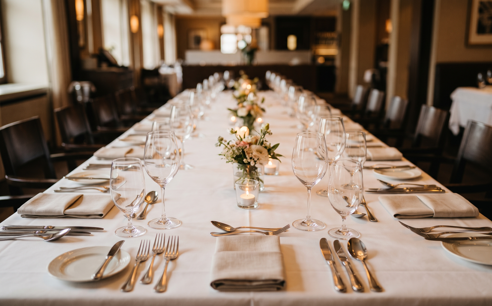

Step 2
At the table
A formal place setting looks like a puzzle, but it follows a simple logic. Learn the pattern once and you can read any table.

Reading a place setting
Point at a number in the list, or at a number on the table, to highlight both.
- NapkinGoes in your lap soon after you sit. Leave it on your chair if you step away.
- ForksLeft of the plate. The outermost fork is for the first course, so work from the outside in.
- Dinner plateYour main plate sits in the middle: Meal.
- KnifeRight of the plate, with the blade turned toward the plate.
- SpoonRight of the knife, for soup or coffee.
- Dessert utensilsAbove the plate, or brought out with dessert.
- Bread plateUpper left: Bread. A small knife may rest on it for butter.
- GlassesUpper right: Water, with a wine glass just beyond it.
Sources: The Boston Globe, The US at Work (Kaye), American Nurse Journal (Pagana).
Two memory tricks
BMW Bread on the left, Meal in the middle, Water on the right. Say it in your head and you will always find your own bread plate and glass.
The b-and-d trick. Touch the tip of each forefinger to its thumb and hold up the other three fingers. Your left hand now looks like a lowercase b (bread), and your right hand looks like a d (drinks).
Bread, step by step
When the basket arrives, do not serve yourself first. Offer it to the person on your left, take a roll, and pass it to the right. Then tear off one bite-sized piece at a time and butter only that piece.
Sources: The Boston Globe, American Nurse Journal (Pagana).
Ordering and eating
Do Make it easy on yourself
- Order something mid-priced that is easy to eat neatly, such as chicken, fish, or pasta with a light sauce.
- Match your host's pace. Start when they start and finish around the same time.
- Take small bites so you can answer a question without a long pause.
- Taste your food before you add salt or pepper, and pass the two together.
- Rest your knife and fork on your plate when you pause. When you are done, lay them together diagonally on the plate, handles toward the lower right.
Avoid Common slips
- Ordering the most expensive item, or something messy like ribs or spaghetti with red sauce.
- Putting a used utensil back on the table, or waving it around while you talk.
- Pushing your plate away to show you are finished.
- Complaining about the food, the service, or the restaurant.
- Asking for a take-home box at a business meal.
If something goes wrong. Spilled a drink? Apologize briefly, tidy up quietly, and go back to the conversation. Dropped a fork? Leave it and ask the server for a clean one.
Sources: Business Management Daily, NBC News (Dizik), The US at Work (Kaye), American Nurse Journal (Pagana).